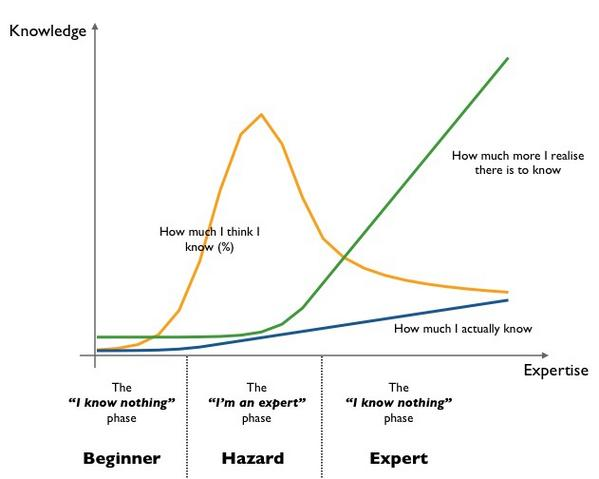
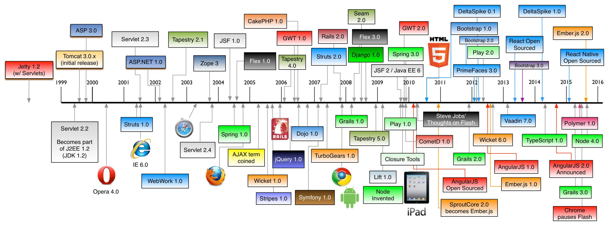
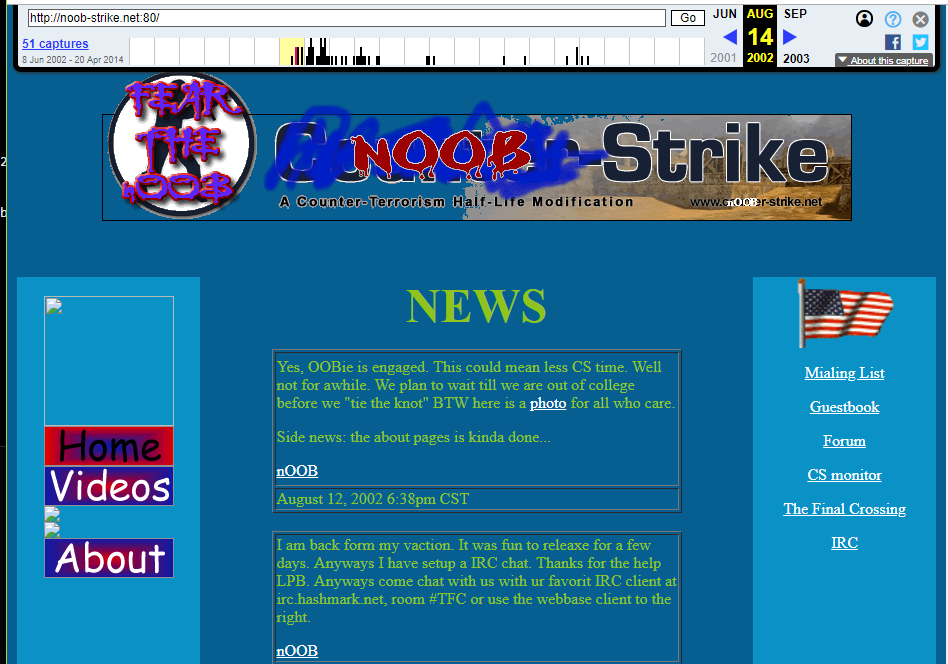
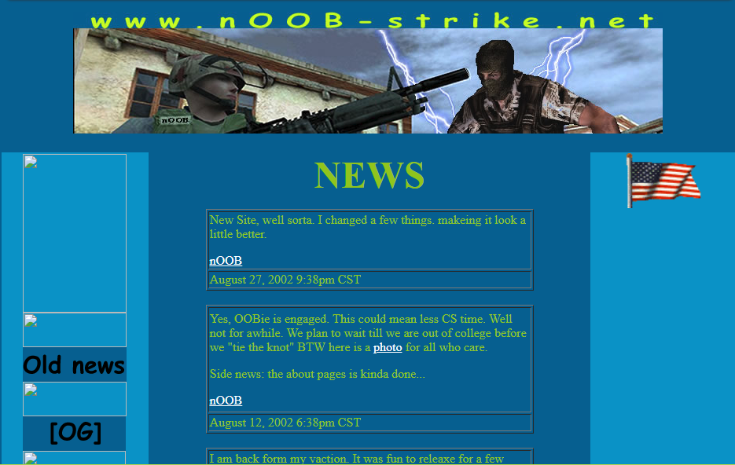
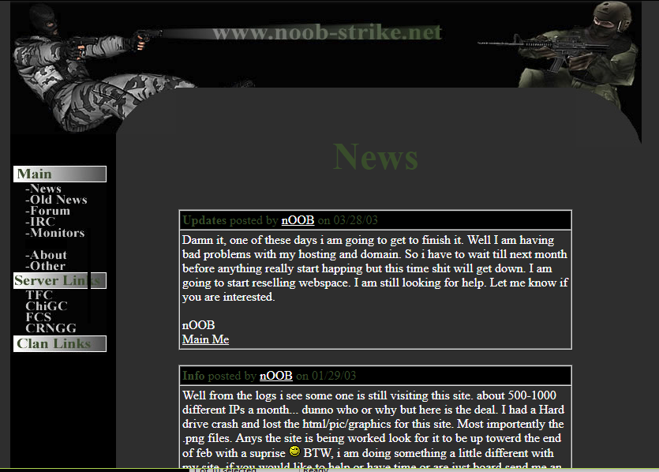
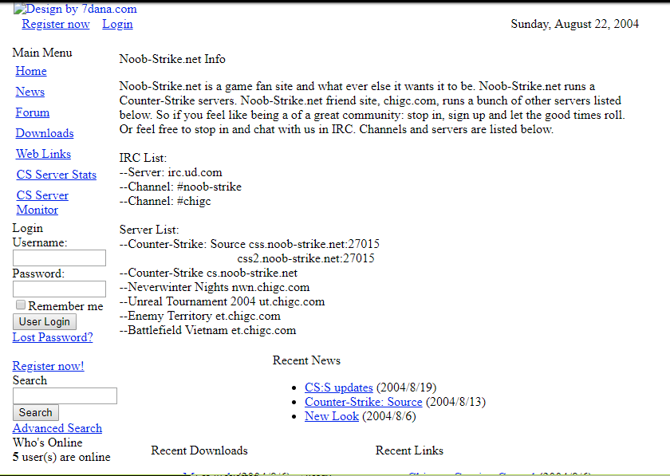
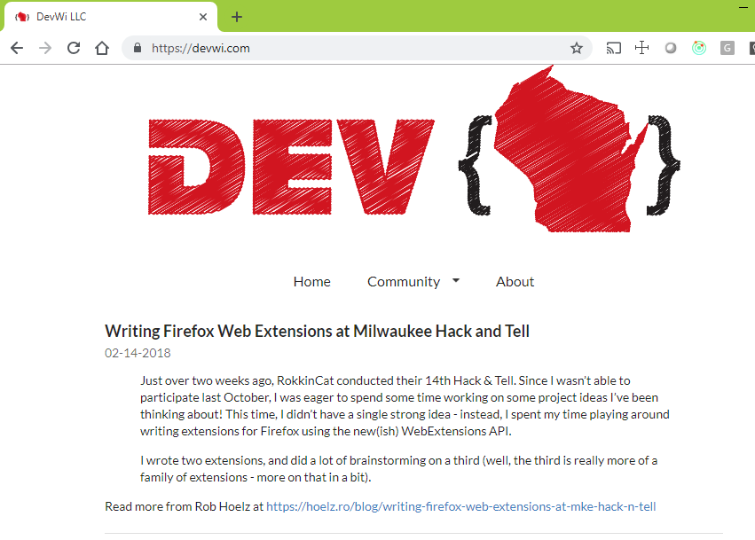

## Tony Gemoll <img src="imgs/7I61NsID_400x400.jpg" height="230" width="230"/> * Sr. Enterprise Architect at Northwestern Mutual * DevWi.com, GeekWithOpinions.com * @Oobert on Twitter, Github, Gitlab * tony.gemoll@gmail.com
## Preface * Don't feel overwhelmed * Always new things to learn * Never boring?  <p style="margin-top: -47px; font-size: 16px;">source: https://twitter.com/drjfrank/status/526797997334863875</p>
 <p style="font-size: 16px; margin-top: -46px;">source: https://github.com/mraible/history-of-web-frameworks-timeline</p>
## Technologies * HTTP (verbs, status codes, cookies) * caniuse.com * linux * security * owasp top 10 * Authentication & Authorization * backend development * node, .net, java
## Tooling * IDE - Webstorm, VSCode * Debug tooling - Firefox, Chrome * CLI * npm
## Frameworks * Know HTML & JS & CSS * React (create react app), vue, angular (angular-CLI) * babel, webpack * express, koa * static websites * gatsby, jekyll, metalsmith * SASS, LESS, Bootstrap...
## workday * Communication * Average team make up * Agile, Scrum, kanban...
## Where to go from here * Job Outlook * Hiring Tips * Career Tips * Learning & problem solving > raw knowledge * Story Telling * Find what keeps your attention, do that
# My Story
## My journey (2002) 
## My journey (2002) 
## My journey (2003) 
## My journey (2004) 
## ?????
## My journey (Today) 
## Questions?? #### Tony Gemoll <img src="imgs/7I61NsID_400x400.jpg" height="150" /> * DevWi.com, GeekWithOpinions.com * @Oobert on Twitter, Github, Gitlab * tony.gemoll@gmail.com